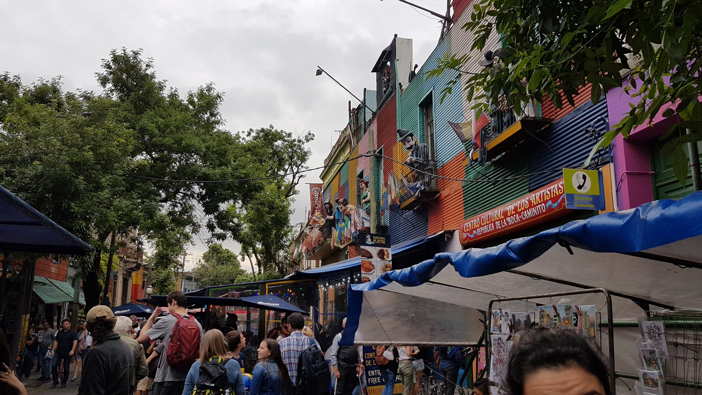
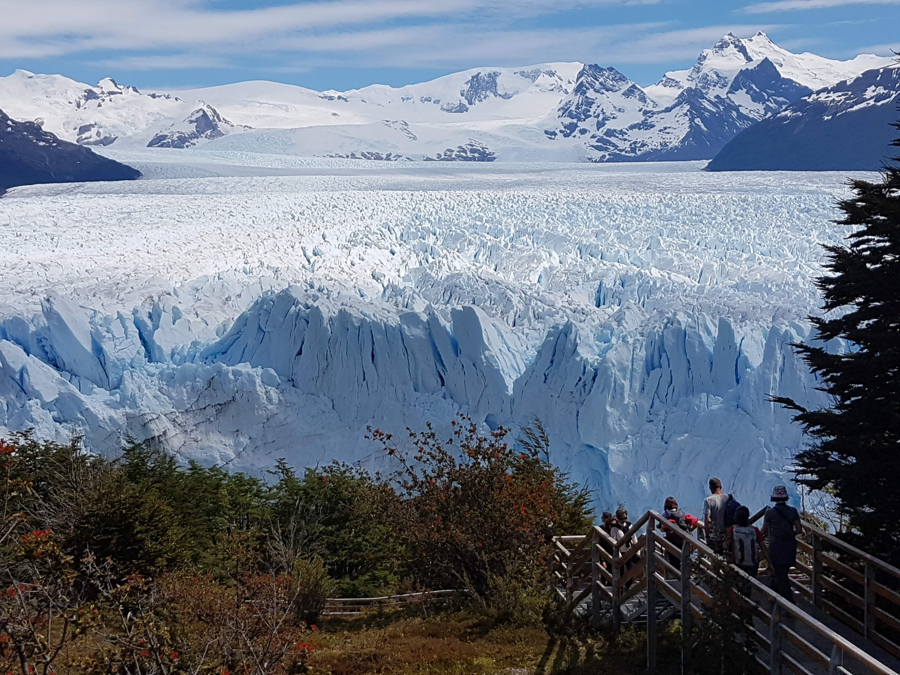
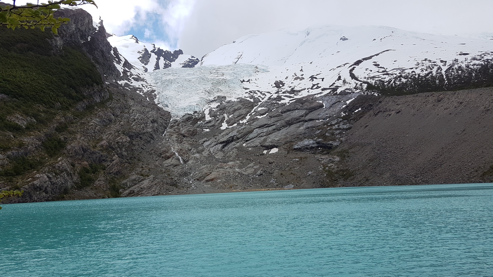

It all starts in the capital city, Buenos Aires, a city with a very diverse architecture which is split into 7 parts. The liveliness of the city and the events across are unlike any other capital city in the world. This city lives up and beyond the reputation of being called "Paris of South America". The quality of life i found there was very posh/high. Found a cafe in almost every other store and wine bars after that. One thing that we did struggle with was converting the pounds to argenitinian peso, it proved to be impossible other than the banks and some dealers on the street.

Referred to as the "Trekking Capital of Argentina", this had to be our next stop to visit all the scenic beauties that South America has to offer. The town itself was amazing given that its a small town between 3 mountain ranges and it was ever so tiny. You could literally walk from one end to other end in 15 minutes. The whole town was so wholesome where we were entertained by dogs walking about free. All the doors always open, people waving at each other, family run restaurants. ABSOLUTE CLASS! Having said that our first stop was one of the largest glaciers in the world, Perito Moreno, the beauty of this was just outstanding and can't be described in words. The whole journey to get there which included a walk through a forest and trek to get in between a few mountain ranges was impeccable.

The next day our goal was set, was to reach the base of a mountain where the glacier was melting into a lake. This whole journey took us 8 hours with a combination of a casual walk to scrambling upwards. The reward at the end of this was a beautiful lake and mountain covered in clouds which made is feel ever so close to being in the clouds. This goes by the name of Glacier Heumul and if this was crossed, you would cross the border to chile.

After a well deserved rest, we moved on to the next journey which was climbing up Fitz Roy, but unfortunately due to the weather starting to snow we couldn't do that. On that note, the weather in these parts of Argentina was similar to London in the fact that you cant predict it. Have sun in the morning could be snowing by the evening which is amazing in its own respect.
Being only a few hours away from the largest waterfall system in the world, we needed to visit this place. This waterfall spreads across 3 countries (Brazil, Argentina and Paraguay). When you are actually there, its something amazing, the heat with the clear blue sky, the water splashing around you almost making it a perfect temperature. We had to cross the border on a bus get stamped with brazil entrance and thats the day i realised having a British Passport is a blessing as we did not need a visa for South America. The video below will show you a glimpse of what we experienced.
This whole trip was memorable took 21 days and cost us £1600 between two of us. Which i believe is a bargain. Would definitely recommend anyone to visit these parts and I haven’t covered everything so there will be things you discover yourself while you are there.
Click here to return to home page.
Click here to return to page top.